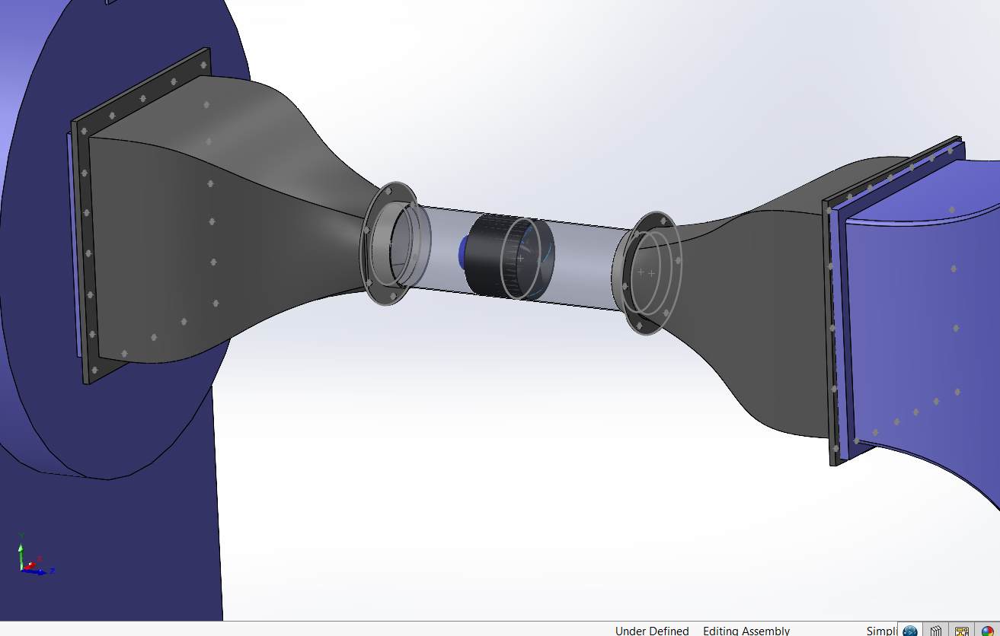
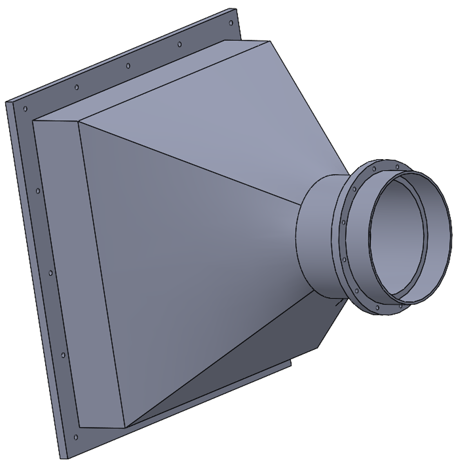
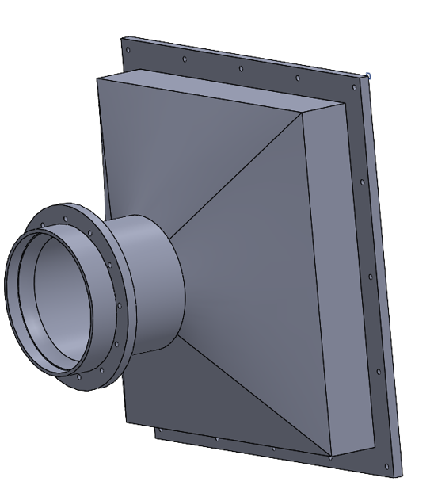

Developing preliminary mechanical hardware and ducting concepts for the GIMAS Lab Small Fan Distortion experiment. This phase focuses on the CAD design, mounting architecture, and structural checks needed to connect an existing wind tunnel working section to a small ducted fan propulsor.
The current concept adapts a 12-inch square tunnel cross-section down to a 6-inch circular duct using a smooth contraction loft inspired by the MIT Gas Turbine Lab (GTL) test architecture. Work completed includes preliminary SolidWorks models, flanged screen interfaces, stress evaluations on the screen mesh, and material trade studies for the ducting.



The middle test pipe required a nominal 6-inch bore conforming to Schedule 40 dimensional standards (6.065-inch inner diameter, 6.625-inch outer diameter) while enabling optical flow visibility[cite: 4].
| Material | Optical Clarity | Structural Rigidity | Availability & Cost | Design Verdict |
|---|---|---|---|---|
| Clear PVC (Sch 40) | High optical visibility | Good structural wall thickness (0.280") | Standard off-the-shelf; low cost | Selected: Direct match for standard flanges and pipe fittings[cite: 4] |
| Extruded Acrylic Tube | Near-glass clarity | Moderate; more brittle under vibration | Common commercial stock; moderate cost | Alternative: Retained if higher optical fidelity is needed[cite: 4] |
| Fused Quartz | Superior transmittance | Extreme heat tolerance | Custom fabrication; high expense | Ruled Out: Excessive cost; no high-temperature requirement in this rig[cite: 4] |